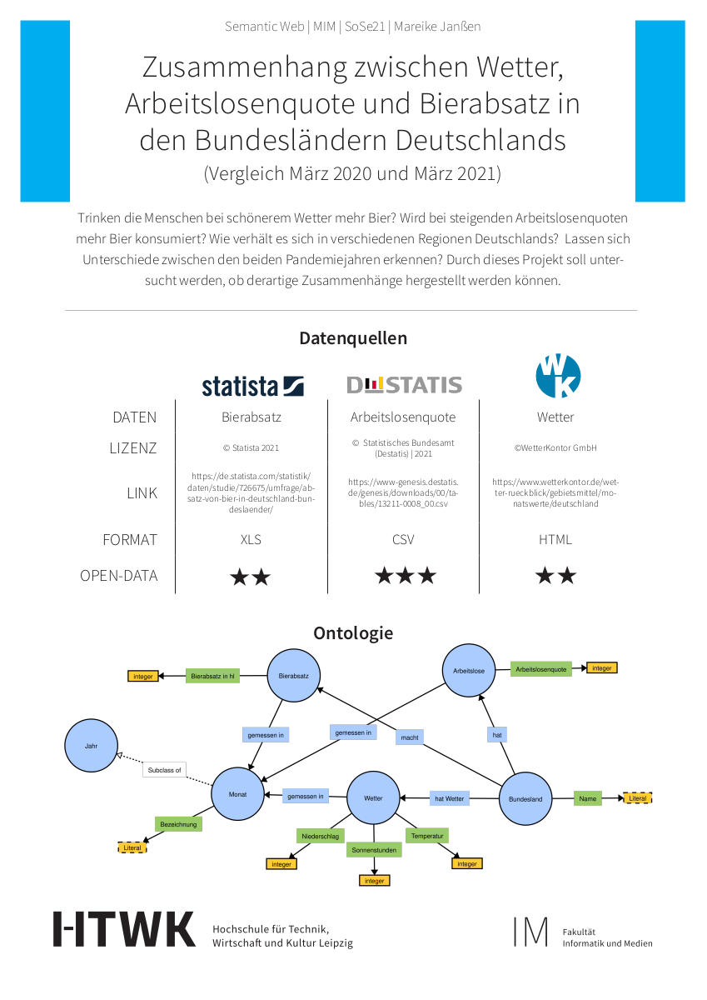

Mareike Janßen
Do people drink more beer when the weather is nice? Will more beer be consumed when the unemployment rate rises? How is it in different regions of Germany? Are there any differences between the two years of the pandemic? The aim of this project is to investigate whether such relationships can be established.
